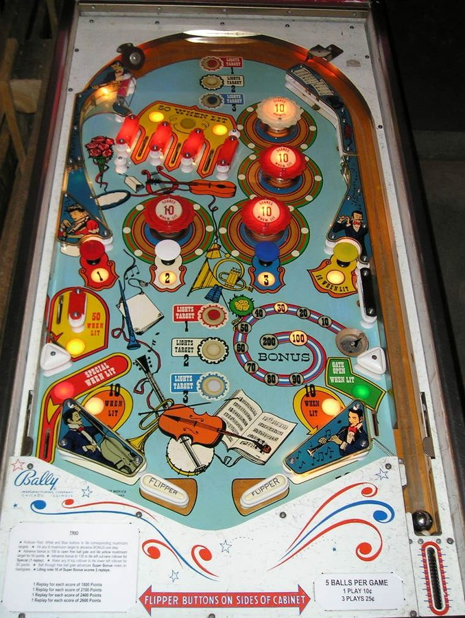

The red, white, and blue rollover buttons located at the top of the game and near the flippers score 10 points. Pressing a lit rollover button lights the corresponding mushroom bumper (red 1, white 2, or blue 3). Mushroom bumpers score 10 points. When lit, the red, white, and blue mushroom bumpers add 10 points to the Bonus value, up to a maximum of 200. The Bonus value can only be collected at the lower right saucer and carries over across balls and games until it is won. If the bonus is at least 100, the free ball gate will be open in the right out lane, and the yellow mushroom bumper will be lit for 50 points instead of 10. If the bonus is at least 130, the left out lane is lit for Special. The bonus is 0 immediately after it is scored; making the saucer again with no bonus lit scores 0 points. Be mindful of the saucer kickout, as it will frequently flick the ball directly between the flippers for a center drain.
Top lanes score 10 points, or 50 when lit. Either the two outer top lanes or the center top lane are lit at any one time. Making a lit top lane lights the lower left side lane for 50 points instead of 10. Out lanes also score 50 points. Scoring 50 points anywhere in the game alternates which top lane(s) are lit.
The upper-right-most pop bumper is always lit for 10 points. The other three pop bumpers and the two slingshots score 1 point or 10 when lit, and are lit pseudo-randomly based on switch hits. This game, like many other mid-1960s Bally games, uses a dynamic difficulty system that lights features less frequently if the machine has recently given out Specials.
Going through the right out lane when the bonus is at least 100, and therefore using the free ball gate, lights the next music note on the backglass. Lighting music note #10 scores 1, 2, or 3 Specials. This is a carryover feature that does not reset at the start of a ball or start of a game. On the main version of Trio, a Special can score either a free game or 100 points. However, there were also add-a-ball versions of Trio, and on those models, a Special can score 1 extra ball.
There is no end of ball bonus. The displayed Bonus value is only collected by making the lower right saucer. Tilt ends game.
The below picture of Trio's playfield was taken from the Internet Pinball Database, where it was originally provided by Ian Lambden.
